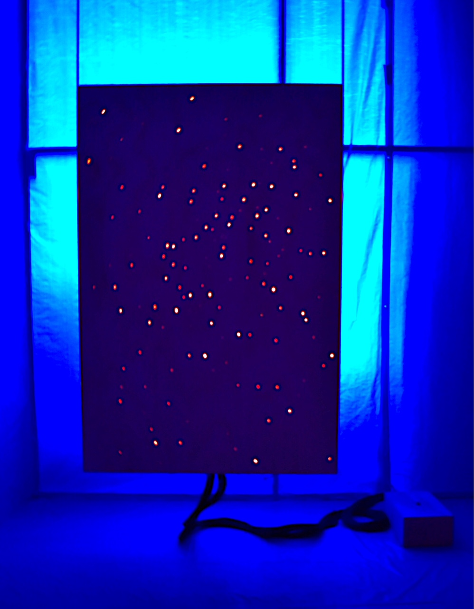

----------------------------------------------------------------- The BORDER, a New Project Space Focusing on Immigrant Art, Opens at 56 Bogart
Article by Adam Aslan 3-7-18

In a climate of intense antagonization against immigrants where youth in the DACA program are fighting just to stay in this country, one art space is opening to aid and showcase talented immigrant artists. The first show called The Border #1 is currently displaying artists from Slovakia, Iran/Greece, Peru, Georgia, and Colombia. Some of them have had or are having museum shows in their respected homelands.
The new project space called THE BORDER, opened last Friday during the storm and surprisingly enough, a lot of people came out to see the show. It was an interesting mixture of immigrants and Americans, networking and getting along.
During the opening of The Border #1, the founder and curator of the show, Jamie Martinez, kept closing and opening the door while saying “The Border is closing”, then once it was dark, you were able to fully enjoy the hypnotizing sculpture by Peter Kaspar as it came to life. The sculpture uses fiber optics to transmit lasers through the plywood as it flashes and moves throughout the 72” x 48” piece and is all powered by a single colorful rock. Yes, a rock.
Another interesting work is by Aphrodite Désirée Navab, who recently had a very successful show and performance at Johannes Vogt gallery in the lower east side. She is showing a series of 8 drawings called The Love Labyrinth, which goes perfectly with the blue-tarped space as it can feel a bit disorienting at times.
Jamie also says, " THE BORDER will focus on supporting and showing immigrant artists living in the United States in the hopes of creating a nurturing environment for immigrants and non-immigrants alike to create a dialogue around their work. Reflecting the best of American diversity, THE BORDER will be open to everyone."
Participating Artists: Peter Kaspar (Slovakia), C.J. Chueca (Peru), Levan Mindiashvili (Georgia), Aphrodite Désirée Navab (Iran/Greece) and Jamie Martinez (Colombia).
THE BORDER curated by Jamie Martinez
March 2 - March 26, 2018
56 Bogart Street 1st FL
BK, NY 11206